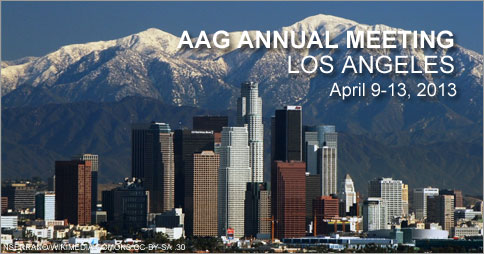

Ph.D., Assistant Professor and GIS Coordinator
Department of Geography & Environmental Studies
Northeastern Illinois University
Geographic Information Systems (GIS) Graduate Certificate
Undergraduate Geographic Information Systems (GIS) Certificate
Research Interests
My research interests are with the development of geographic information science (GISci) and remote sensing to support geographic inquiries in urban and environmental domains. Specifically, I pursue several themes:
• Theories and techniques of remote sensing and GIS with applications in the urban environment;
• Integration of GIS, image analysis and spatial modeling for urban simulation; and
• Complexity of coupled human and natural systems.
Education
- Ph.D., Geography (2014), Florida State University, Tallahassee, Florida, USA
Dissertation: Integrating Geographic Information Technologies for Land Change Analysis and Modeling in an Urban Area - M.S., Geographic Information Science (2009), Florida State University, Tallahassee, Florida, USA
- B.S., Urban and Rural Planning, Resource Management (2006), Peking University, Beijing, China
Scholarly Publications
- Liu, T. and Yang, X. Spatial modeling the residential land growth dynamics in Atlanta metropolitan area (to be submitted to Computers, Environment and Urban Systems; in process)
- Yang, X. and Liu, T. Quantifying land patterns and estuarine nitrogen loading relationship at four different aggregation units (to be submitted to Journal of Coastal Research; in process)
- Liu, T. and Yang, X. 2015. Monitoring land changes in an urban area using satellite imagery, GIS and landscape metrics. Applied Geography, 56:42-54
- Liu, T. and Yang, X. 2013. Mapping vegetation in an urban area with stratified classification and multiple endmember spectral mixture analysis. Remote Sensing of Environment, 130:251-264
- Liu, T. and Yang, X. 2012. Geospatial modeling of urban landscape changes through an agent-based approach. Proceedings of the 2012 AutoCarto International Symposium on Automated Cartography, Columbus, Ohio, September 16-18, 2012
- Zhao, T., Brown, D., Fang, H., Theobald, D., Liu, T., and Zhang, T. 2012. Vegetation productivity consequences of human settlement growth in the eastern United States. Landscape Ecology, 27(8):1149-1165
Scholarly Presentations
- Liu, T. and Yang, X. 2015. Multi-Scale Modeling of the Factors Driving Urban Land Use Changes. To be presented at the 2015 Annual Meeting of the Association of American Geographers(AAG), April 21-25, 2015, Chicago, Illinois
- Liu, T. 2014. Integrating Geographic Information Systems and Remote Sensing for Land Change Analysis in an Urban Area. Presented at Northeastern Illinois University Fifth Annual Faculty Research & Creative Activities Symposium, November 14, 2014, Northeastern Illinois University, Chicago, Illinois
- Liu, T. and Yang, X. 2014. Modeling Residential Land Change Trajectories through an Agent-Based Approach. Presented at the 2014 Annual Meeting of the Association of American Geographers(AAG), April 8-12, 2014, Tampa, Florida
- Liu, T. and Yang, X. 2013. Simulating Residential Development Decisions through an Agent-Based Approach. Presented at the 2013 Annual Meeting of the Association of American Geographers(AAG), April 9-13, 2013, Los Angeles, California
- Liu, T. and Yang, X. 2012. Conceptualizing an Agent-based Model to Simulate Urban Residential Development Dynamics. Presented at the Seventh International Conference on Geographic Information Science (GIScience 2012), September 18-21, Columbus, Ohio
- Liu, T. and Yang, X. 2012. Geospatial Modeling of Urban Landscape Changes through an Agent-based Approach. Presented at the 2012 AutoCarto International Symposium on Automated Cartography, September 16-18, Columbus, Ohio
- Liu, T. and Yang, X. 2012. Towards Agent-Based Modeling of Urban Land Use Changes. Presented at the 2012 Annual Meeting of the Association of American Geographers(AAG), February 24-28, 2012, New York City, New York
- Liu, T., Shi, D. and Yang, X. 2011. Mapping Urban Vegetation Using Hierarchical Classification and Multiple Endmember Spectral Mixture Analysis. Presented at the 8th International Association of Landscape Ecology (IALE) World Congress, August 18-23, 2011, Beijing, China
- Shi, D., Liu, T.and Yang, X. 2011. Mapping Urban Vegetation by Support Vector Machines. Presented at the 8th International Association of Landscape Ecology (IALE) World Congress, August 18-23, 2011, Beijing, China
- Liu, T.and Yang, X. 2009. Mapping Forest Density and Its Validation by NDVI in Leon County. Presented at the 2009 Annual Meeting of Southeastern Division of the Association of American Geographers (SEDAAG), November 22-24, 2009, Knoxville, Tennessee
Honors and Awards
- AAG Dissertation Research Grant by the Association of American Geographers (2013)
- AAG International Geographic Information Fund (IGIF) Student Travel Grant by the Association of American Geographers (2013)
- DeVoe L. Moore Dissertation Fellowship with DeVoe Moore Center, Florida State University (2012-2013, USD $20,000)
- Conference Presentation Grants by the Congress of Graduate Students, Florida State University (2013/2012/2011)
- SEDAAG Travel Award by the 2009 Annual Meeting of Southeastern Division of the Association of American Geographers (2009)
Professional Services
- AAG Session Organizer and Chair
- Special Paper Session “Land Change Modeling: Concepts, Techniques, and Applications” at the 2015 Annual Meeting of the Association of American Geographers (AAG), April 21-25, 2015, Chicago, Illinois (in process)
- Special Paper Session “Land Change Modeling I: Methods and Techniques” at the 2014 Annual Meeting of the Association of American Geographers (AAG), April 8-12, 2014, Tampa, Florida
- Special Paper Session “Land Change Modeling II: Applications and Decision Making” at the 2014 Annual Meeting of the Association of American Geographers (AAG), April 8-12, 2014, Tampa, Florida
- Special Paper Session “Land Change Modeling: Concepts, Techniques, and Applications” at the 2013 Annual Meeting of the Association of American Geographers (AAG), April 9-13, 2013, Los Angeles, California
- Manuscript Reviewer
- Advances in Space Research
- Applied Geography
- Remote Sensing of Environment
- Ecological Informatics
- Journal of Asian Geography
- SPIE Proceedings of the 2nd International Conference on Earth Observation for Global Changes (EOGC)
- Conference Volunteer and Translator
The 8th International Association of Landscape Ecology (IALE) World Congress, August 18-23, 2011, Beijing, China
Teaching
- GIS II
- Urban Information Systems
- Geographic Problems in Quantitative Measurements
- GIS III
- Remote Sensing & Digital Image Processing
- World Geography
- Human Geography
November 14, 2014
New Publication in Applied Geography
My first author paper Monitoring land changes in an urban area using satellite imagery, GIS and landscape metrics published in Applied Geography is now available online at: http://authors.elsevier.com/a/1Q1pVWf-Apso2 (free access valid for 50 days, until January 4, 2015)
February 7, 2014
Land Change Modeling Paper Sessions @ AAG 2014
is scheduled on Saturday, 4/12/2014, from 8:00 AM - 11:40 AM in Room 16, TCC, First Floor
Sponsorships
Geographic Information Science and Systems Specialty Group
Remote Sensing Specialty Group
Spatial Analysis & Modeling Specialty Group
Organizers
Ting Liu (Chair)
Xiaojun Yang
Session Outlines
5116 Land Change Modeling I: Methods and Techniques (8:00 AM)
- Geographically Weighted Artificial Neural Networks for Multicenter Urban Growth Modeling - Kang S Lu
- Modeling Land Cover Change Using On-Demand Simulation - Gordon M Green
- Urban Growth Forecasting: Limits of temporal accuracy in SLEUTH land use change model - Gargi Chaudhuri
- Integrating storylines with a spatial allocation model to construct land use scenarios of future development and land conservation patterns - Michelle L Johnson, Spencer R Meyer, Robert J Lilieholm, and Christopher S Cronan
- Taking Measure of the Samothrace Landscape - Michael Page
5216 Land Change Modeling II: Applications and Decision Making (10:00 AM)
- Modeling Residential Land Change Trajectories through an Agent-Based Approach - Ting Liu and Xiaojun Yang
- Predicting forest disturbance and regrowth in the Southern Yucatán, Mexico using multi-date Landsat and simulation modelling - Yan Yan and John Rogan
- Incorporating Vulnerability in Modeling Population Changes in a Coastal Environment - Kenan Li and Nina Lam
- Discussant - Xiaojun Yang
March 26, 2013
Two AAG Grants Awarded
I have been awarded an AAG IGIF (International Geographic Information Fund) Student Travel Grant to support my travel to the 2013 AAG Annual Meeting in Los Angeles! I am organizing a Special Paper Session entitled "Land Change Modeling: Concepts, Techniques, and Applications", and will be presenting a paper "Simulating Residential Development Decisions through an Agent-Based Approach."
In addtion, I have been awarded an AAG Dissertation Research Grant to support my doctoral dissertation research. I will be using the grant for a research travel to my study site, Gwinnett County, Georgia.
February 22, 2013
Research Paper Accepted by Remote Sensing of Environment
My first author paper entitled “Mapping Vegetation in an Urban Area through Stratified Classification and Multiple Endmember Spectral Mixture Analysis” has just been accepted for publication by Remote Sensing of Environment (RSE)!
RSE is an international premier journal in remote sensing and environmental sciences. Its impact index for 2011 was 4.574, ranking 16/205 in environmental sciences, and 1/24 in remote sensing.
January 31, 2013
2013 AAG Paper Session 5118 - Land Change Modeling: Concepts, Techniques, and Applications
is scheduled on Saturday, 4/13/2013, from 8:00 AM - 9:40 AM in Santa Barbara B, Westin, First Floor

Sponsored by
AAG Landscape Specialty Group
AAG Geographic Information Science and Systems Specialty Group
AAG Spatial Analysis & Modeling Specialty Group
Land changes are a complex process in which human and natural systems interact over space and time. And geospatial modeling techniques can enhance our understanding of the land change process. Over the past several decades, various modeling approaches have been developed, including statistical models, rule-based models, mathematical optimization, cellular automata, agent-based models, and hybrid models. They provide insights into the functioning of land changes at aggregated and individual levels, across various spatio-temporal scales, as well as in human, natural, or the coupled systems. This session provides a forum for researchers to exchange new ideas in theories, methods, and techniques relating to the development of geospatial models for land change simulation. Topics may include but are not limited to:
• Issues in model conceptualization: representation of complexity, human-environment interactions, decision-making, and spatial and temporal scales;
• Issues in model implementation: data integration, computational algorithms, and parameter calibration;
• Issues in model validation: landscape pattern characterization, uncertainty, and error measurements;
• Issues in model applications: scenario design, implementation, and applications; and
• Roles of remote sensing and GIS for land change modeling.
September 25, 2012
Conference Presentations in Columbus, Ohio
I have presented my ongoing work at two conference in September. My paper "Conceptualizing an Agent-based Model to Simulate Urban Residential Development Dynamics" was selected for a presentation at the Seventh International Conference on Geographic Information Science (GIScience 2012). Another review paper on agent-based land use models was selected for a presentation at the 2012 AutoCarto International Symposium on Automated Cartography. The full paper has been collected into the conference proceedings.
August 22, 2012
Dissertation Fellowship Recipient
I have been awarded the dissertation fellowship for 2012-2013 from the DeVoe L. Moore Center, Florida State University.
Contact
Address:
Department of Geography
Room 315, Bellamy Building
113 Collegiate Loop
PO Box 3062190
Florida State University
Tallahassee, FL 32306-2190